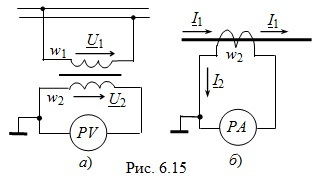

Измерительные трансформаторы тока и напряжения применяют, во-первых, для изоляции измерительных приборов и аппаратов автоматической защиты от цепи высокого напряжения, и, во-вторых, для расширения пределов измерения измерительных приборов.
Трансформатор напряжения (ТН) подобен силовому трансформатору небольшой мощности. Его первичная обмотка с большим числом витков w1 включается в цепь, напряжение U1 которой нужно измерить, а к вторичной обмотке со значительно меньшим числом витков w2 - обмотке низшего напряжения U2 присоединяется вольтметр V (рис. 7.14, а). При этом заземляют один вывод вторичной обмотки и корпус трансформатора.
Сопротивление вольтметра составляет несколько тысяч ом, т. е. ТН работает в условиях, близких к режиму холостого хода силового трансформатора, что позволяет считать U1 ≈ Е1х и U2 ≈ Е2х. Так как отношение Е1х/Е2х = w1/w2 = n, то напряжение сети U1 = nU2, где U2 - показание вольтметра V.
Трансформатор тока (ТТ) со стороны первичной обмотки, имеющей небольшое число витков w1, включается последовательно с контролируемой установкой (рис. 7.14, б), а его вторичная обмотка с большим числом витков w2 замыкается непосредственно на амперметр А, имеющий внутреннее сопротивление, меньшее 2 Ом. Поэтому ТТ работает в условиях, близких к режиму короткого замыкания трансформатора, для которого соотношение токов I1 = nI2. Следовательно, первичный ток I1 может быть определён умножением вторичного тока I2 (показания амперметра А с стандартной шкалой 5 А) на коэффициент трансформации n. При измерении больших токов первичная обмотка выполняется в виде провода, продетого в окно магнитопровода. Напряжение на первичной обмотке ТТ во много раз меньше вторичного напряжения (w1 < w2). При разомкнутой вторичной обмотке неуравновешенная МДС первичной обмотки w1I1 индуктирует во вторичной обмотке ЭДС порядка сотен вольт и до 1,5 кВ у ТТ на большие токи. Поэтому нельзя размыкать вторичную цепь ТТ при измерении тока приёмника.